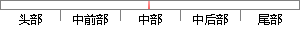

另一方面，金融机构的存在，一定程度上增加了交易的复杂性，并且限制了小额支付交易。
片段位置图

相似结果|
1
原句片段：另一方面，金融机构的存在，一定程度上增加了交易的复杂性，并且限制了小额支付交易。
相似片段 1：而金融中介的存在,也会增加交易的成本,并且限制了...可行的最小交易规模,也限制了日常的小额支付交易。...矿工的工作是整个系统的核心,也是最复杂性最高的地方...
|
※ 片段修改建议 ※
近似词参考：- 一定：必然 肯定 必定
- 程度：水平
- 交易：买卖 生意业务
- 并且：而且
- 限制：限定
- 支付：付出
- 交易：买卖 生意业务
系统自动生成语句：另一方面，金融机构的存在，必然水平上增加了买卖的复杂性，而且限定了小额付出买卖。
注：本片段修改建议为系统自动生成，仅供参考。